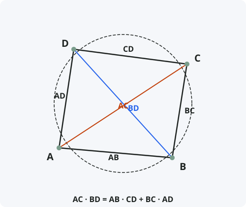

Теорема Птолемея
Формулировка
Во вписанном в окружность четырёхугольнике произведение диагоналей равно сумме произведений противоположных сторон.
Обозначения
Пусть дан вписанный в окружность четырёхугольник ABCD.
AB, BC, CD, AD — стороны четырёхугольника.
AC и BD — диагонали.
Тогда: AC · BD = AB · CD + BC · AD

Доказательство
Теорема доказана.
Обратная теорема
Следствия из теоремы
- Для прямоугольника (AB = CD, BC = AD, AC = BD) теорема даёт: AC² = AB² + BC² — теорема Пифагора.
- Для равнобедренной трапеции теорема упрощается.
- Теорема Птолемея позволяет находить длину диагонали вписанного четырёхугольника, зная его стороны и вторую диагональ.
- С помощью теоремы Птолемея можно вывести формулы для синуса и косинуса суммы углов.
- Теорема Птолемея эквивалентна формуле сложения для синуса в тригонометрии.
Примеры применения
Пример 1. Во вписанном четырёхугольнике ABCD стороны AB = 3, BC = 4, CD = 5, AD = 6. Диагональ AC = 7. Найдите диагональ BD.
Решение: AC · BD = AB · CD + BC · AD ⇒ 7 · BD = 3·5 + 4·6 = 15 + 24 = 39 ⇒ BD = 39/7 ≈ 5,57.
Пример 2. Докажите, что в правильном пятиугольнике отношение диагонали к стороне равно золотому сечению.
Решение: Рассмотрим вписанный четырёхугольник из четырёх вершин пятиугольника. Применяя теорему Птолемея, получаем уравнение d² = a² + a·d, откуда d/a = (1+√5)/2 = φ.
Пример 3. Выведите формулу синуса суммы: sin(α + β) = sin α cos β + cos α sin β.
Решение: Рассмотрим вписанный четырёхугольник, образованный диаметром и хордами. Теорема Птолемея даёт тригонометрическое тождество.
Историческая справка
Теорема названа в честь Клавдия Птолемея (около 100–170 гг. н.э.) — древнегреческого астронома, математика и географа, жившего в Александрии.
Птолемей сформулировал и доказал эту теорему в своём главном труде «Альмагест» (около 150 г. н.э.). Он использовал её для составления таблиц хорд — предшественников современных тригонометрических таблиц.
«Альмагест» оставался основным астрономическим трудом на протяжении 14 веков. Теорема Птолемея — одно из самых известных его математических достижений.
Интересные факты
- Теорема Птолемея — одна из немногих теорем древности, которая не была известна Евклиду и не вошла в «Начала».
- Существует неравенство Птолемея: для любого четырёхугольника AC · BD ≤ AB · CD + BC · AD, причём равенство достигается только для вписанного.
- Теорема Птолемея обобщается на случай произвольного вписанного многоугольника (теорема Кэзи).
- В тригонометрии теорема Птолемея эквивалентна формулам сложения углов.
- С помощью теоремы Птолемея можно доказать, что если диагонали вписанного четырёхугольника перпендикулярны, то сумма квадратов противоположных сторон равна квадрату диаметра.